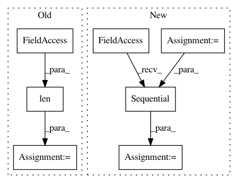

286a8cb1abde6e030e935734509d7f6832ce0f7f,OpenNMT/train.py,,main,#,307
Before Change
print(" * number of training sentences. %d" % len(trainData.src))
print(" * maximum batch size. %d" % opt.max_batch_size * pool.count)
else:
metadata = dict(
options=opt,
vocabSize=dict(
source=dataset.dicts.src.words.size(),
target=dataset.dicts.tgt.words.size()
),
additionalFeatures=dict(
source=len(dataset.dicts.src.features),
target=len(dataset.dicts.tgt.features)
),
sequenceLength=dict(
source=trainData.maxSourceLength,
target=trainData.maxTargetLength
),
trainingSentences = len(trainData.src)
)
onmt.utils.Log.logJson(metadata)
After Change
encoder = onmt.Models.loadEncoder(checkpoint.models.encoder, idx > 1)
decoder = onmt.Models.loadDecoder(checkpoint.models.decoder, idx > 1)
else:
encoder = onmt.Models.buildEncoder(opt, dataset.dicts.src)
decoder = onmt.Models.buildDecoder(opt, dataset.dicts.tgt, not opt.json_log)
model = nn.Sequential(encoder, decoder)
trainModel(model, trainData, validData, dataset, checkpoint.info)
if __name__ == "__main__":
In pattern: SUPERPATTERN
Frequency: 3
Non-data size: 7
Instances
Project Name: pytorch/examples
Commit Name: 286a8cb1abde6e030e935734509d7f6832ce0f7f
Time: 2016-12-23
Author: alerer@fb.com
File Name: OpenNMT/train.py
Class Name:
Method Name: main
Project Name: mariogeiger/se3cnn
Commit Name: 2279ca536f544d1e7a841b708f213163b6a8d17b
Time: 2018-01-03
Author: geiger.mario@gmail.com
File Name: arch/example.py
Class Name: CNN
Method Name: __init__